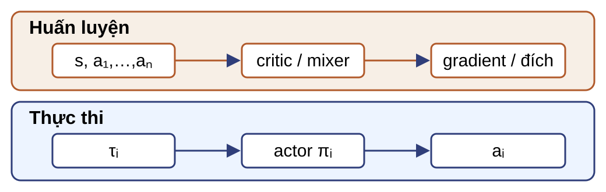
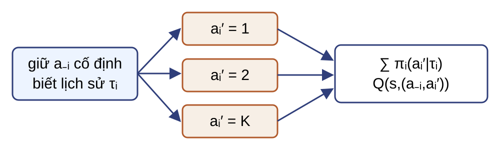
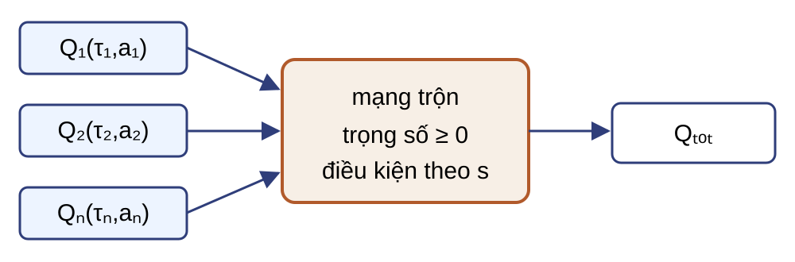
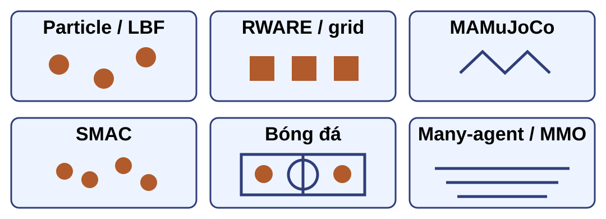
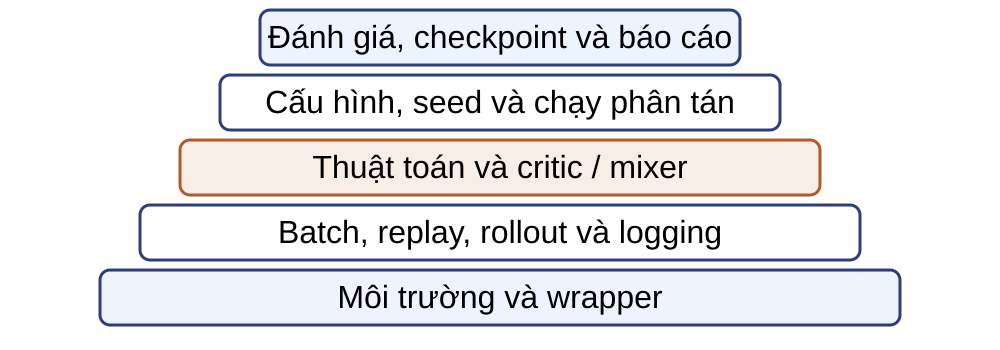
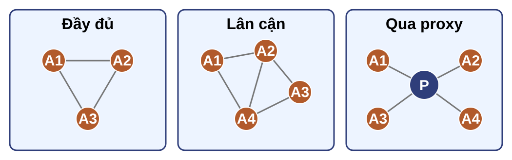
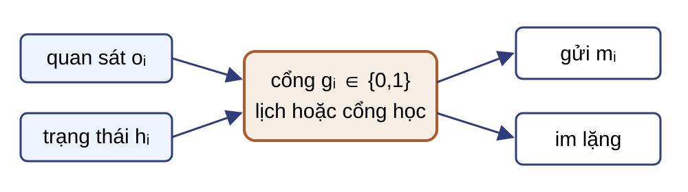
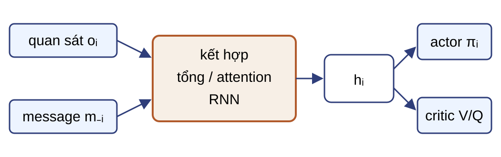

Trường hợp rời rạc, quan sát đầy đủ và policy Markov dùng giả thiết độc lập có điều kiện: $\pi_{-i}(\mathbf a_{-i}\mid s)=\prod_{j\ne i}\pi_j(a_j\mid s)$.
Trong trò chơi hợp tác hoàn toàn, joint policy tối đa hóa return chung là một cân bằng Nash; chiều ngược lại không nhất thiết đúng.
Phần thưởng xác định loại tương tác
Hợp tác hoàn toàn
$r_1=\cdots=r_N=r$.
Zero-sum
$\sum_i r_i(s,\mathbf a)=0$.
Constant-sum: tổng là hằng số.
General-sum
$\mathbf r=(r_1,\ldots,r_N)\in\mathbb R^N$.
Với hơn hai tác tử, zero-sum không có nghĩa mọi cặp đều đối kháng.
CTDE tách thông tin học và thông tin chạy

Huấn luyện tập trung, thực thi phân tán (CTDE) không bắt buộc các tác tử gửi thông điệp khi chạy.
Bản đồ các hiện thân CTDE
Các ký hiệu sẽ được định nghĩa trong các cụm thuật toán kế tiếp.
họ
thành phần tập trung
thành phần phân tán
COMA
critic $Q(s,\mathbf a)$
actor $\pi_i(a_i\mid\tau_i)$
MADDPG
critic $Q_i(x,\mathbf a)$
actor tất định $\mu_i(o_i)$
VDN
tổng $Q_{\mathrm{tot}}$ khi học
$Q_i(\tau_i,a_i)$ để chọn tham lam
QMIX
mixer $Q_{\mathrm{tot}}(\cdot,s)$ khi học
$Q_i(\tau_i,a_i)$ để chọn tham lam
MAPPO
value trong huấn luyện
actor cục bộ
Bốn trục gây khó
Gán công
Reward chung không nói tác tử nào đóng góp.
Đồng nhất và chia sẻ
Chỉ chia sẻ tham số khi miền tương thích; thêm ID/vai trò nếu actor phải phân biệt tác tử.
Quan sát
Lịch sử cục bộ có thể không đủ để suy ra trạng thái.
Khác biệt tác tử
Khác miền hoặc vai trò có thể cần policy, đầu ra hoặc tham số riêng.
Phần thưởng chung chưa gán được công
Nhớ công thức policy gradient cục bộ: $\nabla_{\theta_i}J=\mathbb E[\nabla_{\theta_i}\log\pi_i(a_i\mid\tau_i)\widehat A_i]$ — mấu chốt là cách xây $\widehat A_i$ khi phần thưởng chung.
Phạm vi cụm: hợp tác hoàn toàn, return chung và hành động rời rạc. Cho $Q(s,\mathbf a)=6$ sau hành động chung đã chọn.
Không có đường cơ sở riêng
Mọi actor nhận cùng tín hiệu $6$.
Phản thực
So hành động đã chọn với các hành động khác của chính tác tử đó.
COMA giữ $\mathbf a_{-i}$ cố định để cô lập lựa chọn của tác tử $i$.
Baseline phản thực thay một hành động

Trọng số của từng lựa chọn phản thực là xác suất dưới chính policy của tác tử $i$.
Một baseline COMA bằng $5$
Giữ $a_{-i}$ cố định. Tác tử $i$ có hai hành động:
$a_i'$
$\pi_i(a_i'\mid\tau_i)$
$Q(s,(a_{-i},a_i'))$
trái
$0{,}25$
$2$
phải
$0{,}75$
$6$
$$b_i=0{,}25\times2+0{,}75\times6=5.$$
Nếu hành động thực là “phải”, $A_i^{\mathrm{COMA}}=6-5=1$.
Phải đánh giá $Q$ cho mọi hành động thay thế của tác tử $i$.
Critic tập trung cần thông tin chung trong huấn luyện.
Đường cơ sở xử lý gán công cục bộ, không loại bỏ mọi nguồn phương sai.
Actor khi chạy vẫn chỉ dùng $\tau_i$.
Câu hỏi: Nếu $|\mathcal A_i|$ tăng từ $5$ lên $100$, phép tính nào của COMA tăng trực tiếp?
$Q$ chung lớn nhưng thực thi phải cục bộ
Phạm vi cụm: hợp tác hoàn toàn, return chung và hành động rời rạc. Khi chạy, mỗi tác tử chỉ có $\tau_i$.
Tính nhất quán cực đại cá nhân–toàn cục (Individual–Global–Max, IGM): phân rã giá trị cần giữ cho các quyết định tham lam cục bộ khớp với quyết định tham lam chung của $Q_{\mathrm{tot}}(\boldsymbol\tau,\mathbf a,s)$.
Đẳng thức tập hợp vẫn giữ khi có nhiều hành động đồng cực đại.
VDN chỉ dùng phép cộng nên không biểu diễn được tương tác phi cộng giữa các utility cục bộ. QMIX thay phép cộng bằng mixer phi tuyến đơn điệu nhưng vẫn giữ tính nhất quán cực đại cá nhân–toàn cục (IGM).
Đơn điệu giữ cực đại cục bộ
Hai tác tử có utility tại hai hành động lần lượt là $Q_1=(1,3)$ và $Q_2=(2,5)$; các giá trị trong ví dụ đều không âm. Gọi $q_1=Q_1(a_1^*)=3$, $q_2=Q_2(a_2^*)=5$.
$$Q_{\mathrm{tot}}=2q_1+q_2+0{,}1q_1q_2=12{,}5.$$
Trên miền không âm, hai đạo hàm riêng đều dương. Đây là ví dụ điều kiện đơn điệu, không phải kiến trúc QMIX cụ thể.
Mọi tổ hợp cực đại cục bộ là một cực đại chung; quan hệ tập hợp vẫn đúng khi có hòa.
Hypernetwork tạo trọng số không âm

Giàu hơn VDN
Mixer phi tuyến, phụ thuộc trạng thái.
Vẫn bị hạn chế
Không biểu diễn mọi joint $Q$ có tương tác không đơn điệu.
Câu hỏi: Một joint $Q$ giảm khi $Q_1$ tăng có thuộc lớp QMIX không?
Một bước huấn luyện QMIX
Lấy từ replay một mẫu $(\boldsymbol\tau_t,s_t,\mathbf a_t,r_t,\boldsymbol\tau_{t+1},s_{t+1},d_t)$ với reward chung. Đặt $m_t=1-d_t$, trong đó $d_t=1$ chỉ ở terminal thật.
Utility online chọn $\mathbf a_{t+1}^{*}$; utility target và mixer target đánh giá. Loss chỉ backprop qua $Q_{\mathrm{tot}}(\boldsymbol\tau_t,\mathbf a_t,s_t;\theta)$.
MADDPG dùng critic tập trung riêng cho từng tác tử
Centralized value learner tạo target và advantage chung khi học; nó không trở thành đầu vào actor khi chạy.
IPPO và MAPPO đổi thông tin của bộ học giá trị
IPPO
MAPPO
actor khi chạy
$\pi_i(a_i\mid\tau_i)$
$\pi_i(a_i\mid\tau_i)$
hàm giá trị khi học
thông tin cục bộ
thông tin tập trung
ưu điểm
đơn giản, ít phụ thuộc trạng thái toàn cục
critic có thể giảm nhập nhằng
giới hạn
critic thấy ít thông tin
cần thông tin toàn cục lúc học
Câu hỏi: Một cài đặt cho actor thấy $s$ khi học nhưng chỉ thấy $\tau_i$ khi chạy. Điều gì bị vi phạm?
Cập nhật một actor làm đổi bài toán của actor kế
Vấn đề
Actor $i_1$ đổi trước thì joint policy không còn là policy đã tạo rollout.
Trực giác tuần tự
Chọn một hoán vị và chuyển ảnh hưởng của các actor đã đổi sang surrogate kế tiếp.
Ví dụ: tỷ số của actor đầu là $1{,}1$ thì surrogate của actor kế dùng $1{,}1\widehat A$. Rollout và joint $\widehat A$ vẫn được tính một lần dưới policy cũ.
HAPPO: clip rồi truyền multiplier
Với thứ tự $i_1,\ldots,i_N$, đặt $M_1=\widehat A$. Khi cập nhật tác tử $i_m$, giữ $M_m$ cố định:
Câu hỏi: Sau cập nhật, $M_m=2$ và $r_m^{\mathrm{new}}=0{,}9$. $M_{m+1}$ bằng bao nhiêu?
Benchmark là một gói giả thiết
Thông tin
Quan sát đầy đủ hay cục bộ; có global state khi học hay không.
Quyết định
Rời rạc/liên tục; đồng nhất/khác vai trò; số tác tử.
Tín hiệu
Reward chung/riêng; dày/thưa; chân trời và tiêu chí dừng.
Objective đúng ở các họ thuật toán chưa đủ; so sánh chỉ có nghĩa khi các trục và giao thức đánh giá khớp.
MPE và LBF kiểm tra phối hợp quy mô nhỏ
MPE
Không gian 2D; gồm task hợp tác, cạnh tranh và mixed.
MADDPG dùng centralized critic riêng cho từng tác tử.
LBF
Gridworld, quan sát đầy đủ hoặc cục bộ.
Mặc định hợp tác; biến thể competitive hoặc force-coop phụ thuộc cấu hình.
RWARE và gridworld làm lộ giới hạn quan sát
RWARE
Robot giao hàng, hành động rời rạc, quan sát cục bộ.
Reward có thể cấu hình shared hoặc individual.
Minigrid / MARLGrid
Lưới có thể kiểm soát tường, mục tiêu, tầm nhìn và reward riêng.
Phù hợp kiểm communication và coordination.
MAMuJoCo và SMAC đổi loại hành động

MAMuJoCo: chia các khớp của hệ điều khiển liên tục cho nhiều tác tử.
SMAC: vi mô chiến đấu StarCraft II, quan sát cục bộ và hành động rời rạc.
Bóng đá và many-agent kiểm tra khả năng mở rộng
ca
đặc điểm cần ghi
phạm vi bằng chứng
Unity / Google Research Football
đội, self-play, state hoặc image observation
cấu hình và paper nguồn
MAgent
grid, nhiều tác tử, reward hợp tác hoặc mixed
slide nguồn minh họa 22–1000 tác tử
Pogema
quan sát cục bộ, goal sparse, tránh va chạm
cấu hình nguồn dùng 1–512
Neural MMO
many-agent, chân trời dài, nhiều vai trò
mùa giải và cấu hình nguồn
OpenAI Five
Dota 2, self-play, action phân rã
Arena 18–21/4/2019; 7.215/7.257 trận
Đường cong thiếu giao thức không đủ để xếp hạng
Cần seed, metric, cửa sổ tổng hợp và uncertainty.
Cần cùng số bước môi trường, compute và cách tune.
Cần phiên bản environment, map và reward mode.
Cần tách kết quả do paper báo cáo khỏi phép so sánh mới của bài giảng.
Câu hỏi: Hai đường cong khác seed và ngân sách tương tác có đủ để xếp hạng thuật toán không?
Framework ghép thuật toán với môi trường
framework
vai trò trong nguồn
ví dụ
PyMARL
codebase cho SMAC
IQL, VDN, COMA, QMIX
EPyMARL
mở rộng thuật toán và môi trường
IPPO/MAPPO, MADDPG; MPE, LBF, RWARE
MARLlib
lớp MARL trên RLlib
actor–critic, phân rã giá trị
HARL
tác tử dị thể
HAPPO, MAPPO, HATD3; SMAC, MAMuJoCo, GRF
Hỗ trợ hiện tại phải được kiểm tra theo phiên bản hoặc commit.
Một framework có nhiều lớp

Đổi một lớp có thể làm thay đổi kết quả dù tên thuật toán giữ nguyên.
Danh sách kiểm tái lập benchmark
Cố định environment, map, wrapper và chế độ phần thưởng.
Ghi quan sát/trạng thái và các hành động khả dụng.
Khóa seed, số bước, tài nguyên tính toán và lịch đánh giá.
Ghi batch/rollout/replay, bộ tối ưu và cách cập nhật mạng đích.
Báo trung bình, độ phân tán, số lần chạy và quy tắc chọn checkpoint.
Câu hỏi: Hai kho cùng ghi “QMIX” nhưng khác wrapper và action mask. Tên thuật toán có đủ để so kết quả không?
Thông điệp có thể đổi hành động khi chạy
Ví dụ: robot A thấy lối đi bị chặn ngoài tầm nhìn của robot B và gửi “lối 3 bị chặn” trước khi B chọn hướng.
Chỉ CTDE
Actor B dùng $\tau_B$; thông tin chung chỉ vào critic khi học.
Actor có giao tiếp
Actor B dùng $(\tau_B,m_{A\to B})$; message phải có khi thực thi.
Năm trục đặc tả kênh giao tiếp
trục
câu hỏi
topology
cặp gửi–nhận nào được phép nối?
quyết định gửi
có gửi ở bước này không, theo lịch hay theo cổng?
nội dung
quan sát, biểu diễn ẩn hay ý định?
tích hợp
tổng, attention, RNN; vào actor, critic hay cả hai?
ràng buộc
băng thông, nhiễu, độ trễ, riêng tư và tấn công?
Topology xác định các cặp có thể liên lạc

Kết nối đầy đủ, lân cận và qua proxy chỉ xác định các cạnh gửi–nhận hợp lệ; chúng chưa quyết định cạnh nào được dùng ở bước hiện tại.
Chính sách giao tiếp chọn có gửi và khi nào

Quy tắc cố định: gửi mỗi $T$ bước hoặc khi một điều kiện đã định xảy ra.
Quy tắc học: cổng cá nhân hoặc bộ điều phối chọn gửi trên topology đã có.
Thông điệp mang dữ kiện ở ba mức
Kinh nghiệm cục bộ
$(o_{t,i},a_{t,i},r_{t,i},o_{t+1,i})$.
Biểu diễn ẩn
$h_{t,i}$ tích hợp lịch sử bằng RNN/LSTM.
Ý định tương lai
Phân phối hoặc kế hoạch hành động sắp tới.
Câu hỏi: Topology và quyết định gửi khác nhau ở đại lượng nào?
Tích hợp thông điệp quyết định đường phụ thuộc

Nếu actor phụ thuộc thông điệp, giao thức gửi, nhận và kết hợp phải hoạt động khi thực thi.
Kênh giao tiếp cần mô hình đe dọa
Tài nguyên và lỗi
Băng thông, độ trễ, mất gói.
Nhiễu hoặc thông điệp bị bóp méo.
Yêu cầu gửi theo nhu cầu.
An toàn và riêng tư
Hạn chế suy ra dữ liệu, mục tiêu hoặc tham số nhạy cảm.
Giả mạo, đầu độc hoặc chiếm quyền bên gửi.
Cần nêu năng lực kẻ tấn công và cơ chế bảo vệ.
Sáu phép kiểm khi đọc một phương pháp MARL
Viết state, observation/history, joint action và reward cho từng tác tử.
Tách kernel nền khỏi MDP cảm sinh đang đổi.
Ghi thông tin có ở huấn luyện và thực thi.
Viết target, baseline, ratio và đường gradient đúng chỉ số.
Nêu cấu trúc giúp thực thi phân tán và lớp hàm bị loại.
Giới hạn kết luận theo benchmark, protocol và phiên bản framework.
Câu hỏi: hợp đồng MARL
Câu hỏi:
Tính $|\mathcal A|$ cho $10$ tác tử, mỗi tác tử có $5$ hành động.
Viết điều kiện zero-sum cho ba tác tử.
Critic thấy $s,\mathbf a$ khi học; actor chỉ thấy $\tau_i$ khi chạy. Đây là hợp đồng nào?
Nêu đại lượng cảm sinh đổi khi $\pi_{-i}$ đổi.
Nếu $J_i(\pi_i^*,\pi_{-i}^*)=5$ nhưng một lệch đơn phương cho $5{,}4$, $\boldsymbol\pi^*$ có là Nash không?
$5^{10}=9.765.625$; $\sum_i r_i=0$; CTDE; $P_i^{\pi_{-i}}$ và $r_i^{\pi_{-i}}$ đổi; không phải Nash.
Câu hỏi: cập nhật các thuật toán MARL
Câu hỏi:
Tính baseline COMA với xác suất $(0{,}25,0{,}75)$, $Q=(2,6)$ và advantage của action phải.
Bước TD QMIX: $r=1{,}5$, $\gamma=0{,}9$, $m=1$; tại trạng thái kế, utility online chọn hành động và target đánh giá $Q_{\mathrm{tot}}^{-}=4$. Tính $y$; nếu $Q_{\mathrm{tot}}(\boldsymbol\tau_t,\mathbf a_t,s_t;\theta)=4{,}6$, tính loss bình phương; nếu terminal thật ($m=0$), tính lại $y$.
HAPPO có $M_2=2{,}2$, $r_2(\theta)=1{,}3$, $\epsilon=0{,}2$. Tính hạng clipped khi $M_2>0$; nếu $r_2^{\mathrm{new}}=0{,}9$, tính $M_3$.
Nêu input actor, critic và critic đích của MADDPG.
$b=5$, $A=1$; $y=1{,}5+0{,}9\times1\times4=5{,}1$, loss $=(5{,}1-4{,}6)^2=0{,}25$, terminal $m=0$ nên $y=r=1{,}5$; hạng clip $=2{,}64$, $M_3=1{,}98$; actor dùng $o_i$, critic dùng $x,\mathbf a$, target dùng $x'$ và mọi target actor.
Câu hỏi: benchmark, framework và giao tiếp
Câu hỏi:
Chọn benchmark để kiểm hành động liên tục và quan sát cục bộ; nêu hai thuộc tính phải khóa.
Một actor dùng thông điệp từ lân cận. Thông điệp cần có ở pha nào?
Phân biệt kết nối đầy đủ với gửi mỗi $T$ bước.
Nêu ba trường bắt buộc để so hai đường cong MARL.
Ví dụ MAMuJoCo; khóa cách chia khớp và quan sát. Thông điệp phải có khi thực thi. Kết nối đầy đủ xác định người nhận; $T$ xác định tần suất. Cần seed, thước đo/độ phân tán và ngân sách/giao thức.